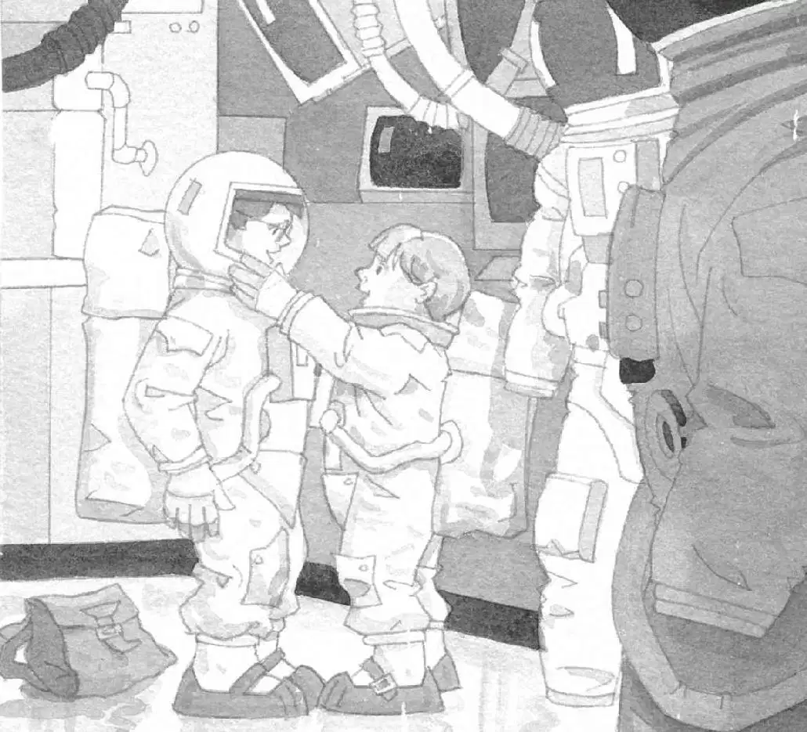

“第四样以M开头的东西肯定就在那外面。”安妮说。
旁边有个按钮，上面写着“开”字。
安妮把手伸向按钮。
“等一等！”杰克一把抓住她的手，“月球上没有空气。记得吗？”
“哦，对。可是我们必须出去找那样东西。”
“让我看看书上是怎么说的。”杰克从背包里把书掏出来，翻了翻，找到画着月球表面的那一页。
他大声念道：
月球上的一天约等于地球上的27天。月球上没有空气可以抵挡太阳的光线，所以白天月球表面温度高达127摄氏度。
杰克看着安妮说：“我告诉过你，如果现在到外面去，我们的血都会被煮开的。”
“恶心！”安妮说。
杰克看着书继续念道：
月球科学家穿着宇航服，上面带有控制装置，防止他们过热或过冷。他们还有储气罐，能提供两个小时呼吸所需的氧气。
“上哪儿能拿到宇航服呢？”安妮问道。她四下看了看，然后顺着走廊往回跑。“也许在那儿……”
杰克在研究他画的平面图。“可以去看看这间宇航服存放室。”
“别盯着图啦，”安妮说，“过来看看吧！”
杰克一抬头，安妮正在走廊那头朝一扇门里看。
“这里面有一大堆宇航员的东西呢！”她说。
杰克跟过去看。
衣架上挂着一些笨重的白色宇航服。隔板上整整齐齐地摆着储气罐、头盔、手套和靴子。
“哇，这就像骑士城堡里的那个盔甲室。”杰克说。
“是啊，那个盔甲室里有很多特别大的盔甲。”安妮说。
“我们挑最小的宇航服穿吧。”杰克说，“可以把它们套在我们的衣服外面。”
安妮找了最小的一套白色宇航服，杰克找了第二小的。他们套上宇航服。
安妮帮杰克把储气罐固定在身上。
“谢谢。”杰克说完也帮安妮固定好储气罐。
“谢谢。”安妮说。
“还有手套。”杰克说。他和安妮戴上了白色的手套。
“靴子呢？”安妮说。他们又各自往脚上套了一双白色的大靴子。
“别忘了头盔。”杰克说着伸手去拿头盔。
“哇，好轻。”他说，“我还以为它会和骑士的头盔一样重呢。”
杰克和安妮戴上头盔，互相帮对方把头盔固定好。
“我的头不能左右移动了。”安妮说。
“我也不能。”杰克说，“我们试着走一走吧。”

杰克和安妮笨手笨脚地在房间里走了起来。杰克感觉自己像一个臃肿的雪人。
“扣上你的面罩。”安妮说。
他们俩把透明面罩扣上。杰克的头盔里立刻充满了凉凉的空气。
“我喘不过气啦！”安妮喊道。她的声音在杰克耳边像打雷一样响。
“哎呀！小点儿声！”杰克说，“我们的头盔里有双向无线对讲机。”
“对不起。”安妮连忙把声音放低。
杰克把月球书放回背包，然后把背包背起来。
“好了！”他说，“别忘了，罐里的空气只够我们呼吸两个小时。所以，我们需要以最快的速度找到第四样东西。”
“但愿能找到。”安妮说。
“我也这么希望。”杰克说。他知道，只有找到那样东西，他们才能回家。
“我们走吧。”安妮说。她轻轻地推了杰克一下。
“当心，不要乱来。”杰克说，“我们穿着这样的衣服，可千万不能摔倒了。”
“快走吧！”安妮说着推杰克离开了房间。两人一起走回到气闸室。
“准备好了吗？”安妮说，“芝麻开门！”
她按了一下写着“开”的按钮，一扇门在他们身后慢慢关上，另一扇门在他们面前徐徐打开。
杰克和安妮跨出舱门，来到了月球上。